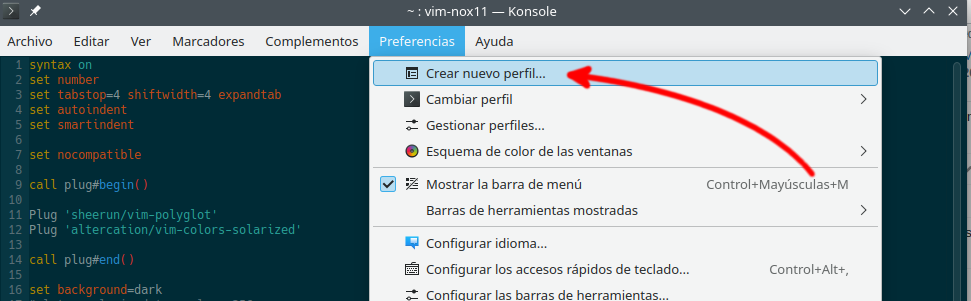
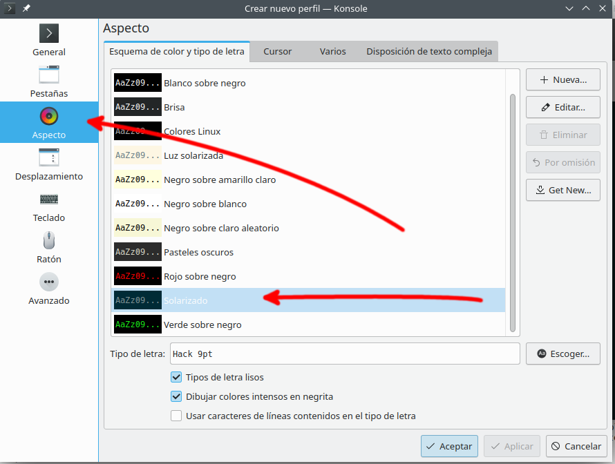
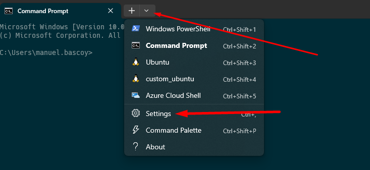
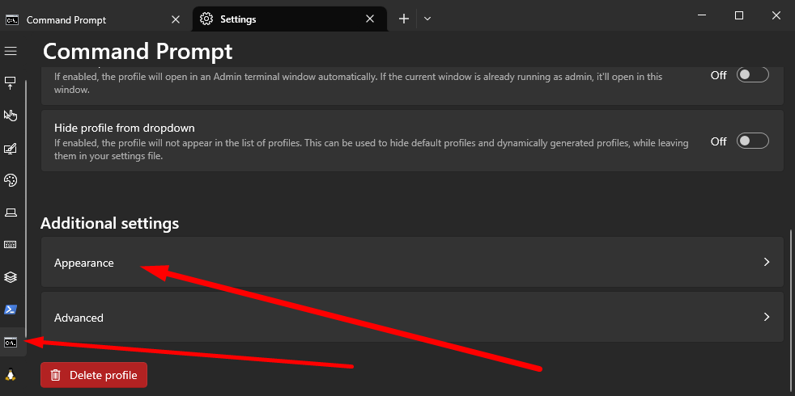
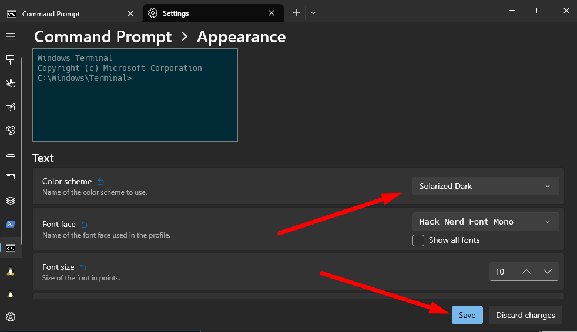
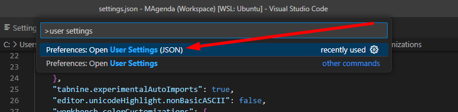

Nos permite cambiar el esquema de colores de vim.
Plug 'altercation/vim-colors-solarized'
(Si no tenemos la carpeta .vim/colors tenemos que crearla)
mkdir ~/.vim/colors
mv ~/.vim/plugged/vim-colors-solarized/colors/solarized.vim ~/.vim/colors/
syntax enable
set background=dark
colorscheme solarizedNOTA: esta configuración tiene que ir ANTES de colorscheme solarized
let g:solarized_termcolors=256
Esta configuración usará una versión degradada de los colores de solarized, si queremos usar los colores puros del plugin, tendremos que utilizar una terminal modificada o una interfaz gráfica como gvim, o modificar los colores de la terminal para que cuadre con el esquema de colores de solarized
Para usar el esquema de colores desde una terminal sin tener que usar el sistema de colores degragado tendremos que añadir a mayores configuraciones en la terminal que vayamos a usar.
Nos vamos preferencias y crear nuevo perfil:
Nos vamos a la sección de Aspector, elejimos el Solarized y le damos a alpicar.
No confundir con cmd esta terminal no es la que viene por defecto en Windows, se puede descargar desde la Microsoft Store
Para aplicar el esquema de colores seguimos estos pasos
Nos vamos a settings:
Seleccionamos el terminal y le damos a Appearance:
Seleccinoamos Solarized dark y le damos a Save:
Para cambiar la configuración en la terminal integrada de VSCode, lo hacemos de la siguiente manera:
Pulsamos F1 y buscamos user settings:
Y en el archivo JSON de configuración añadimos la opcion "workbench.colorCustomizations" con el siguiente contenido:
"workbench.colorCustomizations": {
"terminal.background":"#002B36",
"terminal.foreground":"#93A1A1",
"terminalCursor.background":"#93A1A1",
"terminalCursor.foreground":"#93A1A1",
"terminal.ansiBlack":"#002B36",
"terminal.ansiBlue":"#268BD2",
"terminal.ansiBrightBlack":"#657B83",
"terminal.ansiBrightBlue":"#268BD2",
"terminal.ansiBrightCyan":"#2AA198",
"terminal.ansiBrightGreen":"#859900",
"terminal.ansiBrightMagenta":"#6C71C4",
"terminal.ansiBrightRed":"#DC322F",
"terminal.ansiBrightWhite":"#FDF6E3",
"terminal.ansiBrightYellow":"#B58900",
"terminal.ansiCyan":"#2AA198",
"terminal.ansiGreen":"#859900",
"terminal.ansiMagenta":"#6C71C4",
"terminal.ansiRed":"#DC322F",
"terminal.ansiWhite":"#93A1A1",
"terminal.ansiYellow":"#B58900"
}En la siguiente página podemos encontrar varios esquemas de colores para ser añadidos directamente en esta opción de configuración VSCode color scheme
Vim | plugin | solarized